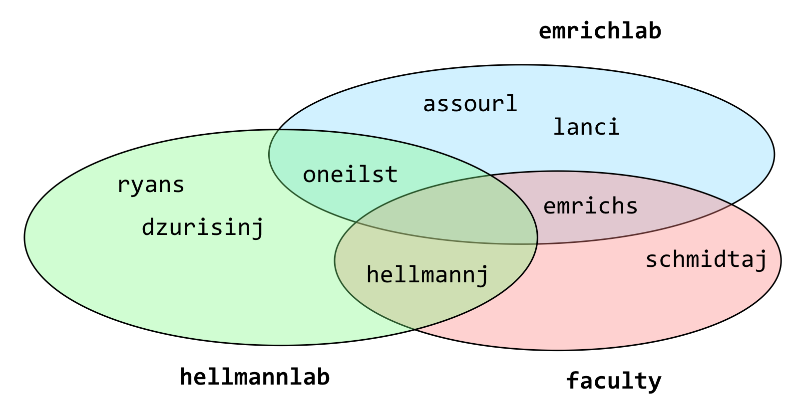
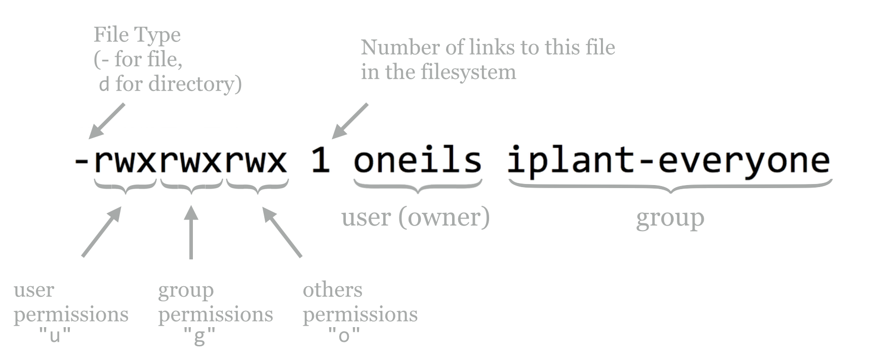
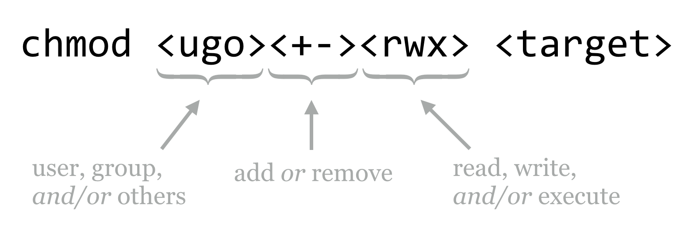
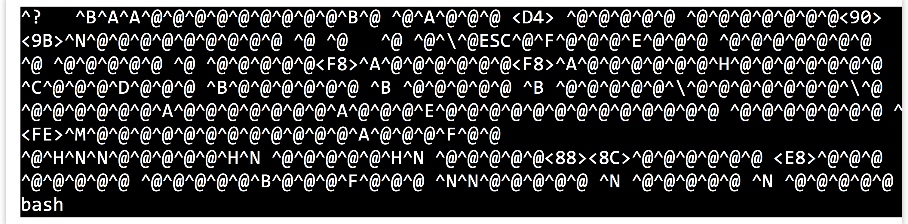
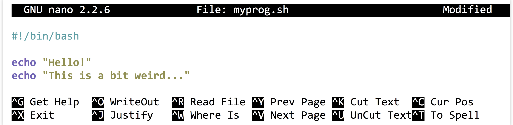
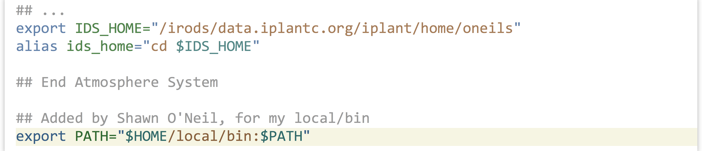

Chapter 5 Permissions and Executables
As mentioned previously, the administrator root configures most things on the system, like where network drives are mounted and how access to the system is granted.12 Most of the files that are important for these configurations are “owned” by root, and for security purposes, other users can’t tamper with them. In fact, all users of the system usually own the files in their own home directory, and these files can’t be tampered with by other users (except for root, who has access to everything). These security settings are controlled via permissions associated with every file and directory.
Root can also put users together into groups, allowing users in the same group to share files with each other but not outsiders, if they so choose. Groups may have more than one user, and a single user may be part of more than one group, as in the following example illustrating three groups and eight users.

The groups command shows the groups to which a user belongs; in the above example, groups oneilst would report emrichlab and hellmannlab. To see your own groups, you can always use something like groups $USER (relying on the shell to replace $USER with your username).
Unfortunately, there’s no surefire or easy way to list all the members of a particular group—at least not without some deep knowledge of how the system is configured or some programming expertise. On some systems, a command like getent group <groupname> will provide the answer; getent group faculty would report emrichs, schmidtj, and hellmannj for the example above.
If you are unsure of a person’s username, the finger command may come to the rescue. You can supply finger with either a first name or last name to search for (or even the username, if known), and it will return information—if entered by the system administrator—about that user.
[oneils@mbp ~]$ finger Shawn
Login: oneils Name: Shawn O'neil
Directory: /home/oneils Shell: /bin/bash
On since Mon Oct 20 16:52 (MST) on pts/0 from 8-169.ptpg.oregonstate.edu
No mail.
No Plan.
Each file and directory is associated with one user (the owner) and one group; unfortunately, in normal Unix-like permissions, one and only one group may be associated with a file or directory. Each file and directory also has associated with it permissions describing:
- what the owner can do,
- what members of the group can do, and
- what everyone else (others) can do.
This information is displayed when running ls -l, and is represented by a combination of r (read), w (write), and x (execute). Where one of these three is absent, it is replaced by a -. Here’s an example, showing two entries owned by oneils and in the iplant-everyone group; one has permissions rwxrwxrwx (an insecure permission set, allowing anyone to do anything with the file), and the other has rwxr-xr-x (a much more reasonable permission set).
[oneils@mbp ~/apcb/intro]$ ls -l
total 20
-rwxrwxrwx 1 oneils iplant-everyone 15891 Oct 20 17:42 p450s.fasta
drwxr-xr-x 2 oneils iplant-everyone 4086 Oct 20 17:40 temp
There is an extra entry in the first column; the first character describes the type of the entry, - for a regular file and d for directory. Let’s break down these first few columns for one of the entries:

Each file or directory may have some combination of r, w, and x permissions, applied to either the user, the group, or others on the system. For files, the meanings of these permissions are fairly straightforward.
| Code | Meaning for Files |
|---|---|
r
|
Can read file contents |
w
|
Can write to (edit) the file |
x
|
Can (potentially) “execute” the file |
We’ll cover what it means for a file to be executable in a bit. For directories, these permissions take on different meanings.
| Code | Meaning for Directories |
|---|---|
r
|
Can read contents of the directory (e.g., run ls)
|
w
|
Can modify contents of the directory (create or remove files/directories) |
x
|
Can cd to the directory, and potentially access subdirectories
|
The temp directory above gives the user all permissions (rwx), but members of the group and others can only cd to the directory and view the files there (r-x); they can’t add or remove files or directories. (They may be able to edit files in temp, however, depending on those files’ permissions.)
The chmod (change mode) utility allows us to add or remove permissions. There are two types of syntax, the simpler “character” syntax and the numeric “octal” syntax. We’ll describe the simpler syntax and leave discussion of the octal syntax for those brave enough to read the manual page (man chmod).

p450s.fasta file.
| Command | Effect |
|---|---|
chmod go-w p450s.fasta
|
Remove write for group and others |
chmod ugo+r p450s.fasta
|
Add read for user, group, and others |
chmod go-rwx p450s.fasta
|
Remove read, write, and execute for group and others |
chmod ugo+x p450s.fasta
|
Add execute for user, group, and others |
chmod +x p450s.fasta
|
Same as chmod ugo+x p450s.fasta
|
If you wish to modify a directory and everything inside, you can add the -R flag (capital R this time for recursive) to chmod. To share a projects directory and everything inside for read access with group members, for example, you can use chmod -R g+r projects.
There are a few small things to note about file and directory permissions. The first is that while it is possible to change the group of a file or directory, you can only do so with the chgrp command if you are a member of that group.
[oneils@mbp ~/apcb/intro]$ groups $USER
oneils : iplant-everyone users community de-preview-access atmo-user dnasubway-users myplant-users
[oneils@mbp ~/apcb/intro]$ cgrp community p450s.fasta
Second, you own the files that you create, but generally only the root user has access to the chown utility that changes the owner of an existing file (it wouldn’t be very nice to “gift” another user a nefarious program).
Third, while it is convenient to be able to open up a directory for reading by group members, doing so is only useful if all of the directories above it are also minimally accessible. In particular, all the directories in the path to a shared directory need to have at least x for the group if they are to be accessed in any way by group members.
Executables and $PATH
What is a “program?” On a Unix-like system, it’s a file that has executable permissions for some user or users. (It also helps if that file contains some instructions that make sense to execute!) Often these are encoded in a “binary” format—simply long strings of 0’s and 1’s representing machine code that the CPU can interpret—but they may in some contexts also be human-readable text files. Many of the programs we’ve been using, like echo and ls, are executable files that live in the /bin directory along with many others, including bash, our shell program.
[oneils@mbp ~]$ cd /bin
[oneils@mbp ~/bin]$ ls -l
total 273840
-rwxr-xr-x 1 root root 959120 Mar 28 2013 bash
-rwxr-xr-x 1 root root 31112 Dec 14 2011 bunzip2
-rwxr-xr-x 1 root root 31112 Dec 14 2011 bzcat
...
If we like, we can even attempt to take a look at one of these with less. For example, we can try to examine the contents of the bash program with less /bin/bash; even though less reports a warning that the file is binary encoded, it won’t hurt to try.

A binary-encoded file doesn’t look like much when we attempt to convert it to text and view it with less. In any case, here’s an “execution rule” we’re going to break almost immediately: to get the shell to run a program (executable file), we specify the absolute or relative path to it.
In this case, our execution rule would indicate that to run the echo program, we would specify the absolute path /bin/echo hello, as the echo program lives in /bin, or ../../../../bin/echo hello for the relative path (because /bin is four folders above our present working directory ~/apcb/intro).
[oneils@mbp ~/apcb/intro]$ /bin/echo hello
hello
[oneils@mbp ~/apcb/intro]$ ../../../../bin/echo hello
hello
Now for the rule-breaking part: we already know that we can just run echo without specifying a path to the program. This means that when we attempt to run a program, the shell must be able to find the executable file somehow. How is this done?
The answer, as with so many questions involving the shell, is an environment variable called $PATH. Let’s check the contents of this variable:13
[oneils@mbp ~/apcb/intro]$ echo $PATH
/usr/local/sbin:/usr/local/bin:/usr/sbin:/usr/bin:/sbin:/usr/games
The $PATH environment variable contains a simple string, describing a list of absolute paths separated by : characters. When we specify what looks to the shell like the name of a program, it searches this list of paths, in order, for an executable file of that name. When we type echo, it tries /usr/local/sbin/echo, then /usr/local/bin/echo, and so on, until it finds it in /bin/echo.
The first matching executable file the shell finds in the directories listed in $PATH is the one that is executed. This could lead to some mischief: if a coworker with a penchant for practical jokes could modify your $PATH variable, they could add their own home directory as the first entry. From there, they could create an executable file called, say, ls that did whatever they wanted, and you would unknowingly be running that! It is possible for anyone with access to your account to modify your $PATH, so it’s a good idea not to leave your terminal window open around anyone with a dastardly sense of humor.
If there are multiple executable files with the same name in this list of paths, can we discover which one the shell will execute? Yes: in bash we can make this determination using the which command.14
[oneils@mbp ~/apcb/intro]$ which echo
/bin/echo
What about a command like cd? We can try to use which to locate a program called cd, but we’ll find that nothing is reported.
[oneils@mbp ~/apcb/intro]$ which cd
[oneils@mbp ~/apcb/intro]$
This is because cd is not a program (executable file), but rather a “command,” meaning the shell notices that it’s a special keyword it should handle, rather than searching for an executable file of that name. Said another way, bash is performing the action, rather than calling an external executable program. Knowing about the difference between commands handled by the shell and programs that are executable files is a minor point, but one that could be confusing in cases like this.
Making Files Executable
Let’s do something decidedly weird, and then come back and explain it. First, we’ll use nano to create a new file called myprog.sh, using the -w flag for nano to ensure that long lines are not automatically wrapped (nano -w myprog.sh). In this file, we’ll make the first two characters #!, followed immediately by the absolute path to the bash executable file. On later lines, we’ll put some commands that we might run in bash, like two echo calls.

Although it looks like the #! (pronounced “shebang,” rhyming with “the bang”) line starts on the second line, it is actually the first line in the file. This is important. Notice that nano has realized we are writing a file that is a bit odd, and has turned on some coloring. Your nano may not be configured for this syntax highlighting. If not, don’t worry: we are creating a simple text file.
After we save the file (Control-o, then Enter confirm the file name to write) and exit nano (Control-x), we can add execute permissions to the file (for everyone, perhaps) with chmod +x myprog.sh.
[oneils@mbp ~/apcb/intro]$ ls
myprog.sh p450s.fa temp
[oneils@mbp ~/apcb/intro]$ chmod +x myprog.sh
[oneils@mbp ~/apcb/intro]$ ls -l
total 24
-rwxr-xr-x 1 oneils iplant-everyone 57 Oct 20 20:49 myprog.sh
-rw-rw-rw- 1 oneils community 15891 Oct 20 17:42 p450s.fasta
drwxr-xr-x 2 oneils iplant-everyone 4086 Oct 20 17:40 temp
It would appear that we might have created a program—we do have an executable file, and you might have guessed that the special syntax we’ve used makes the file executable in a meaningful way. Let’s try it out: according to our execution rule, we can specify the absolute path to it to run it.
[oneils@mbp ~/apcb/intro]$ pwd
/home/oneils/apcb/intro
[oneils@mbp ~/apcb/intro]$ /home/oneils/apcb/intro/myprog.sh
Hello!
This is a bit weird...
It ran! What we’ve created is known as a script to be run by an interpreter; in this case, the interpreter is bash. A script is a text file with execute permissions set, containing commands that may be run by an interpreter, usually specified through the absolute path at the top of the script with a #! line. An interpreter is a program that can execute commands, sometimes specified in a script file.
What is happening here is that the shell has noticed that the user is attempting to run an executable file, and passes the execution off to the operating system. The operating system, in turn, notices the first two bytes of the file (the #! characters), and rather than having the CPU run the file as binary machine code, executes the program specified on the #! line, passing to that program the contents of the file as “code” to be run by that program. Because in this case the interpreting program is bash, we can specify any commands that we can send to our shell, bash. Later, we’ll see that we can create scripts that use much more sophisticated interpreters, like python, to run more sophisticated code.
According to our execution rule, we can also run our program by specifying a relative path to it, like ./myprog.sh (which specifies to run the myprog.sh file found in the present working directory).
[oneils@mbp ~/apcb/intro]$ ./myprog.sh
Hello!
This is a bit weird...
This is the most common way to run files and programs that exist in the present working directory.
If we change to another present working directory, like our home directory, then in order to run the program according to the execution rule, we have to again specify either the absolute or relative path.
[oneils@mbp ~/apcb/intro]$ cd $HOME
[oneils@mbp ~]$ /home/oneils/apcb/intro/myprog.sh
Hello!
This is a bit weird...
[oneils@mbp ~]$ apcb/intro/myprog.sh
Hello!
This is a bit weird...
This process is tedious; we’d like to be able to specify the name of the program, but because the location of our program isn’t specified in a directory listed in $PATH, we’ll get an error.
[oneils@mbp ~]$ myprog.sh
-bash: myprog.sh: command not found
Installing a Program
To add our own programs to the system so that we can run them at will from any location, we need to:
- Obtain or write an executable program or script.
- Place it in a directory.
- Ensure the absolute path to that directory can be found in
$PATH.
Traditionally, the location to store one’s own personal executables is in one’s home directory, inside a directory called local, inside a directory called bin. Let’s create these directories (creating them was also part of a previous exercise, so you may not need to), and move our myprog.sh file there.
[oneils@mbp ~]$ cd $HOME
[oneils@mbp ~]$ mkdir local
[oneils@mbp ~]$ mkdir local/bin
[oneils@mbp ~]$ ls
apcb Documents local Pictures Templates Videos
Desktop Downloads Music Public todo_list.txt
[oneils@mbp ~]$ mv apcb/intro/myprog.sh local/bin
This accomplishes steps 1 and 2. For step 3, we need to make sure that our local/bin directory can be found in $PATH. Because $PATH is an environment variable, we can set it with export, making use of the fact that environment variables inside of double quotes (but not single quotes) are expanded to their contents.
[oneils@mbp ~]$ export PATH="$HOME/local/bin:$PATH"
[oneils@mbp ~]$ echo $PATH
/home/oneils/local/bin:/usr/local/sbin:/usr/local/bin:/usr/sbin:/usr/bin:/sbin:/usr/games
Because the right-hand side of the = is evaluated before the assignment happens, the $PATH variable now contains the full path to the ~/local/bin directory, followed by the previous contents of $PATH.15 If we type a program name without specifying a path to it, the shell will search our own install location first!
[oneils@mbp ~]$ myprog.sh
Hello!
This is a bit weird...
There’s only one problem: every time we log out and log back in, modifications of environment variables that we’ve made are forgotten. Fortunately, bash looks for two important files when it starts:16 (1) commands in the .bash_login file (in your home directory) are executed whenever bash starts as a consequence of a login session (e.g., when entering a password causes bash to start), and (2) commands in the .bashrc file (in your home directory) are executed whenever bash starts (e.g., on login and when bash is executed via a #! script).
If you want to see a friendly greeting every time you log in, for example, you might add the line echo "Hello $USER, nice to see you again!" to your .bash_login file. Because we want our $PATH to be modified even if bash somehow starts without our logging in, we’ll add the export command to the .bashrc file.
The .bashrc file may have information in it already, representing a default shell configuration placed there when the administrator created the account. While we can add our own commands to this file, we should do so at the end, and we should be careful to not disturb the other configuration commands that are likely there for a good reason. Also, the commands in this file should be free of errors and typos—some errors are bad enough to prevent you from logging in! Using the -w when editing the file with nano will help ensure that the editor does not attempt to autowrap long commands that shouldn’t be broken over multiple lines.
[oneils@mbp ~]$ ls -a
. .config .gstreamer-0.10 .profile .vim
.. .dbus .gvfs Public .viminfo
apcb Desktop .ICEauthority .pulse .vimrc
.bash_history Documents .local .pulse-cookie .vnc
.bash_login Downloads Music .ssh .Xauthority
.bash_logout .gconf .netrc Templates .Xdefaults
.bashrc .gnome2 Pictures Todo_list.txt .xscreensaver
.cache .gnupg .pip Videos .xsession-errors
[oneils@mbp ~]$ nano -w .basrc
At the bottom of this file, we’ll add the export line:

Because lines starting with # are “comments” (unexecuted, aside from the #! line, of course), we can use this feature to remind our future selves how that line got in the file. Because commands in these files are only executed when the shell starts, in order to activate the changes, it suffices to log out and log back in.
Exercises
Suppose a file has the following permissions listed by
ls -l:-rwxrw-r--. What does this permission string indicate the about the file?What is the difference between
export PATH="$HOME/local/bin:$PATH"andexport PATH="$PATH:$HOME/local/bin"? In what situations might the former be preferred over the latter?Carefully add the line export
PATH="$HOME/local/bin:$PATH"to your.bashrc(assuming you have alocal/bindirectory in your home directory, and your default shell isbash). Be sure not to alter any lines already present, or to create any typos that might prevent you from logging in.Create an executable script in your
~/local/bin directorycalledmyinfo.sh, which runsechoon the$HOME,$PWD, and$USERenvironment variables, and also runs thedateutility. Try running it by just runningmyinfo.shfrom your home directory (you may need to log out and back in first, to get the shell to recognize the change in the contents of paths listed in$PATHif you modified your.bashrc).Executable
bashscripts that start with#!/bin/bashwill work fine, provided that thebashprogram lives in the/bindirectory. On any system where this isn’t the case (probably a rare occurrence), it won’t. Try creating a bash script where the first line is#!/usr/bin/env bash. Theenvprogram uses the$PATHvariable to locate thebashexecutable, and passes off interpretation of the script to the located bash interpreter. This poses the same problem: what ifenvis not located in/usr/bin? Fortunately, this has been an agreed-upon location for the env program for decades, so scripts written in this manner are portable across more machines.
The administrator, or
rootuser, is sometimes also called the “superuser.” This has been known to go to some administrators’ heads.↩︎The
tcshandcshshells do not use the$PATHenvironment variable. Instead, they look in a shell variable called$path.↩︎In
tcshandcsh, the closest approximation towhichiswhere, thoughwhichmay also work.↩︎The corresponding command to set the
tcshorcsh$pathvariable is:set path = ("$HOME/local/bin" $path).↩︎The corresponding files for
tcshandcshshells are.loginand.cshrc, respectively.↩︎